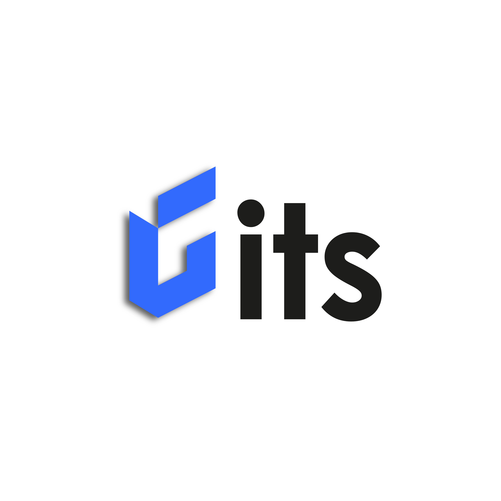

01
VAPT
Vulnerability Assessment & Penetration Testing untuk menemukan celah sebelum dimanfaatkan pihak yang tidak bertanggung jawab.
Pelajari layanan ↗
Konsultasi ↗Security, made actionable
GITS membantu perusahaan menemukan celah, memahami risiko, dan membangun pertahanan digital yang siap menghadapi ancaman nyata.
01 / OUR SERVICES
Vulnerability Assessment & Penetration Testing untuk menemukan celah sebelum dimanfaatkan pihak yang tidak bertanggung jawab.
Pelajari layanan ↗Menerapkan solusi keamanan yang tepat untuk memperkuat jaringan, sistem, dan proses operasional perusahaan.
Pelajari layanan ↗Pelatihan dan simulasi yang membangun kebiasaan aman, karena manusia adalah lapisan pertahanan pertama.
Pelajari layanan ↗02 / OUR APPROACH
Kami percaya keamanan bukan tentang membuat bisnis berhenti bergerak. Keamanan adalah tentang memberi keyakinan untuk terus melangkah, dengan informasi yang tepat dan tindakan yang terukur.
03 / LET'S TALK
Ceritakan tantangan keamanan yang sedang dihadapi. Kami bantu memetakan langkah pertamanya.